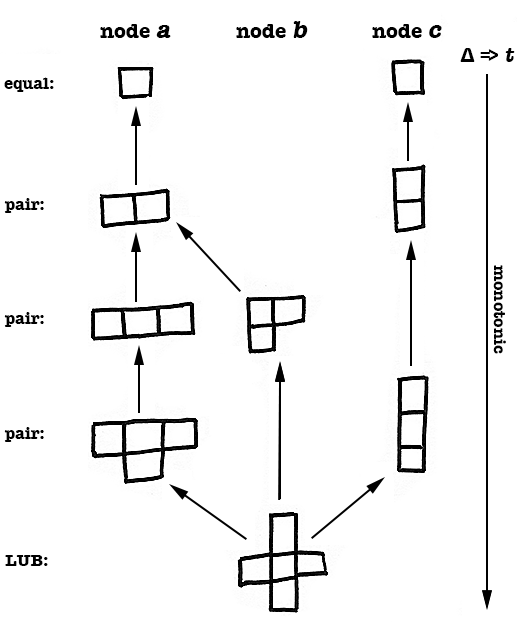

CRDT
Conflict-free
Replicate
Data
Type
Disclaimer:
no experience !
rigor in progress
Full Availability
+
Best Available Consistency
cómo se te queda el cuerpo?
Strong Eventual Consistency
same unordered updates >>> same state
Bonus
diff & dup updates >>> same state on convergency
no merge coordination *
Conflict-free ?
Avoid Consensus
- No Leaders
- No Conflict
- No Concurrency control
- No Latency
On partition
Writes
remain available on all nodes
Reads
best partial state available
Data Type ?
Algebraic Structure with some constraints
Algebraic struct?
Set with arithmetic properties
Why Algebraic Constraints?
Mathematical properties guaranteed
Great boundary for:
non determinism
mutable state
latency
Bounded Mutability Structs Scale
- Monads
- Spark RDD
- Riak Data Types
- Aeron UDP firehose
Constraints
Monotonic
No rollback
Merge func
Associative a·(b·c) = (a·b)·c
Commutative a·b = b·a
Idempotent * a·a = a
yes ... limited use cases
Common use cases
What Counters, rankings, registers, sets, graphs
* composable (maps...)
When Performance, scale, intermitent connections
CRDT types
State based
Operation based
State based
idempotent
local update & merge

practical in small data
Operation based
non idempotent
requires delivery once
=/
Examples
several approaches
libs: no detail knowledge required!
Detail: counter
Built on: Sum & Max
Detail: decreasable counter
Built on: Sum & VVectors
Detail: event set
Built on: Union & VClocks & LWW
Further
@cmeik
Intro resources
https://gist.github.com/SeanTAllen/4c9e75de187d20f6c63e
Riak Data Types
http://docs.basho.com/riak/latest/dev/using/data-types/
A Language for Distributed, Eventually Consistent Computations http://lasp-lang.org/
Much further
non crdt, but also consistency through modelling
@palvaro
Peter Alvaro et al. http://people.ucsc.edu/~palvaro/
Youtube: "I See What You Mean"
Temporal semantics for Distributed Systems